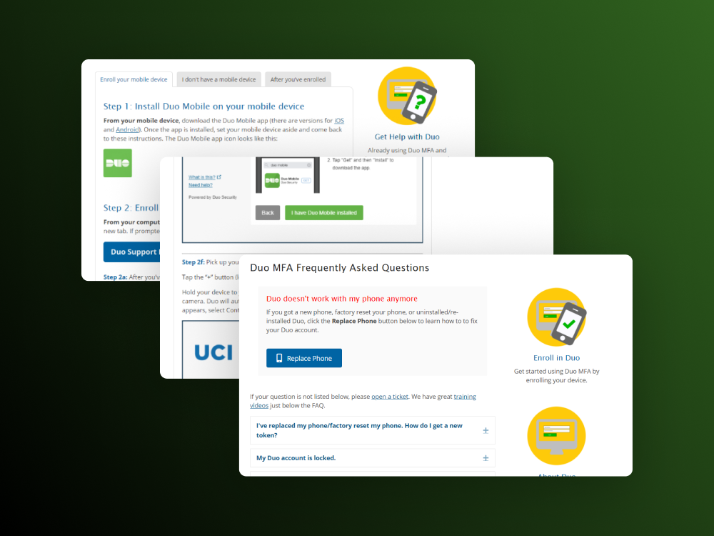

Amazon
As a UX Designer at Amazon, I designed voice and gesture interactions for Amazon Echo Buds
read more
UCI Student Center & Event Services
As a UI/UX Designer at UCI Student Center & Event Services, I worked on a variety of projects where I created high-fidelity web and mobile mockups which were handed off for development.
view projects

Hack at UCI
As the Design Lead of Hack at UCI, I guided the organization's visual content: branding, graphics, and web design.
view work

read case study
Duo Support Website Redesign
The UCI Help Desk receives an enormous amount of calls and emails asking for help with enrolling in Duo multi-factor authentication.
After recognizing that many of the problems encountered by these users could be solved with better UX, I led a project to redesign their Duo support website.
read case study
Hatched
Over 600 teams from the US, Canada, and UK competed to design a tablet application for the Adobe x Amazon Design Creative Jam. Hatched was awarded with an honorable mention and placed in the top 20.
read case study